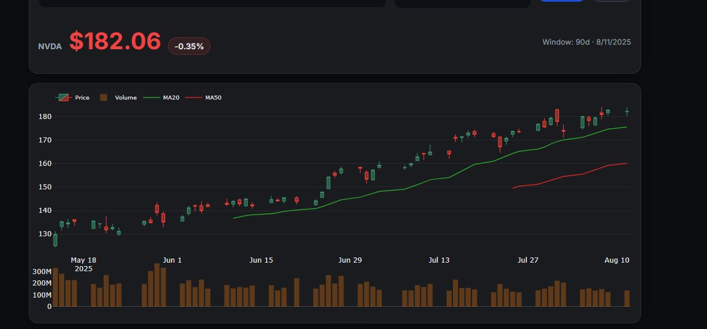
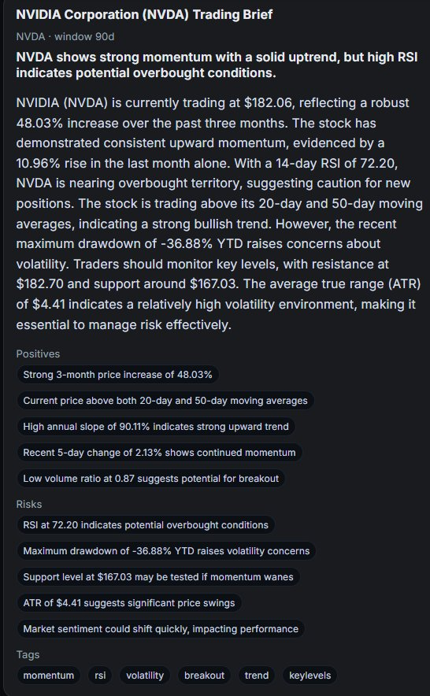
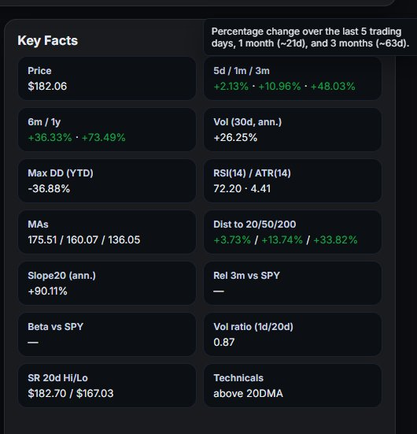

Project · Serverless · LLM
MarketPulse
A serverless app that turns live market data into a short, evidence-based trader's brief. It computes technical indicators from raw price data, then has an LLM explain them in plain language with no invented numbers.
01The problem
Most trading dashboards show numbers and leave the interpretation to you. MarketPulse explains what's happening in a stock (momentum, volatility, risk, key levels) in a few sentences, backed by the actual figures and an interactive chart.
02Architecture
- Static frontendHosted on GitHub Pages. Ticker search with instant autocomplete from a preloaded list.
- API GatewayRoutes
GET /api/story/{ticker}and a health check to Lambda. - Lambda (FastAPI)Fetches price history, computes indicators, and calls the LLM.
- S3 cacheStores each result for 30 minutes so repeat lookups skip the data fetch and LLM call.
The backend is a FastAPI app adapted to Lambda with Mangum. All infrastructure is defined as code in an AWS SAM template, including the encrypted, private S3 bucket and a least-privilege IAM role that can only read and write cache objects and logs.
03How it works
- Market data with a fallback. Pulls daily price and volume history through yfinance. If that fails, it falls back to Yahoo's chart API directly, so one flaky source doesn't take the app down.
- Indicators computed in pandas and NumPy. Returns over 5 days to 6 months, 20/50/200-day moving averages and trend slope, RSI-14, ATR-14, 30-day realized volatility, year-to-date max drawdown, 20-day support and resistance, volume versus its 20-day average, and beta and relative strength against SPY.
- Grounded LLM summaries. The computed facts are passed to the model with a prompt that requires JSON-only output (title, TL;DR, narrative, positives, risks, tags), tells it to use only the numbers provided, and rules out advice or price targets. That keeps the output structured for the UI and stops the model from inventing figures.
- Graceful degradation. If the OpenAI quota or rate limit is hit, the API still returns a data-only summary instead of an error.
- Interactive frontend. Candlestick and line charts in Plotly, green/red price coloring, and a key-facts panel with tooltips that explain each metric.
04Screenshots



